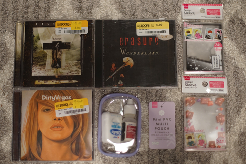
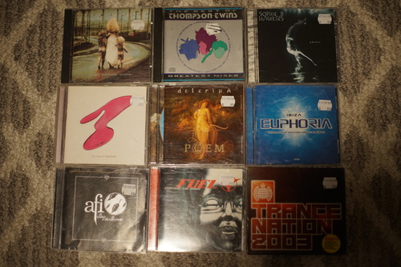

What's up gamers?? I hope you've been keeping up on my advent calendar this year! There will be a quiz at the end of it, so stay studious!

I've bought a few things so I gotta make another regular blog post to document them. I almost missed this first one but luckily I'm listening to an album from this haul that reminded me.
I went back to Big Daiso again with Kohi and also got to visit the Half Price Books in Tacoma. I didn't know there was an HPB down there and now I want to go back and spend more hours there. Big Daiso restocked the toploader section since my last visit, so I grabbed 2 packs of sleeves.
Hello, Gregorian chants.
I left this behind initially because I didn't know what to put in it. I was only able to leave it behind once. I will FIND something to put in it.
2 different designs
Back in Seattle last week, I went through the bargain bin at Al's. I always find something decent in it and the hit rate is much better than a thrift store. The price is 3 for $1.99, which brings the total price for all 9 CDs to $6 plus tax. I spent more on public transit to get there than I did on the haul!
Her first CD was NOT GOOD, but Ryan wanted a song on this one.
If you like Gregorian chants, check out Delerium's albums (and also Enigma)
Mix CD. After comparing track listings and database look up, this CD was definitely in the wrong case. It's the same kind of music though so I'm only upset there's no Bluegrass Tom in this mix.
Such a reasonable price for a wishlist album!
Missing the second disc. Mix CD.
Everything not marked with a price was free in this haul.
I give them all to Ryan!
CUTE
The only thing I spent money on in this haul! My 3rd only ornament of the year.
The price was right.
Ryan bought this for Ryan
There's a record store downtown who mostly sells vinyl, but has a CD rack. He said he had recently moved all CDs on his rack that were $3 and under to his bargain bin. Thank you!!
This one has Rapture by iiO, which I discovered as a child by watching this weird a*s furry surfing on AlbinoBlackSheep as a child. This is mix CD.
I've been looking for this CD so long I actually spent that much on it ;____;
I wanted to get this for white elephant, but I think it would be a wasted joke.
They're eggs!! They're on a skateboard!!!
The text is annoying because they're talking about paintings I've never seen and aren't shown. At least there's nice pictures.
This store has a lot of discs from Buffalo & Erie County Library. New York is almost all the way across the country so I'm not sure how he's getting these.